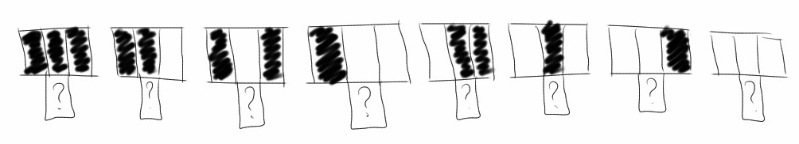
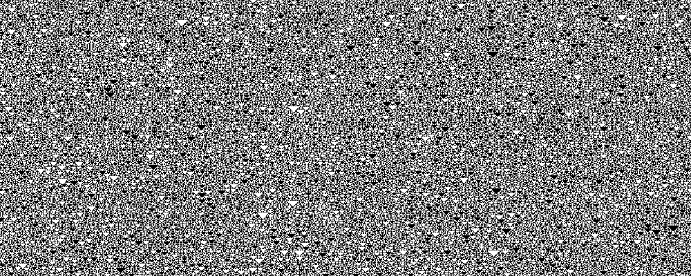
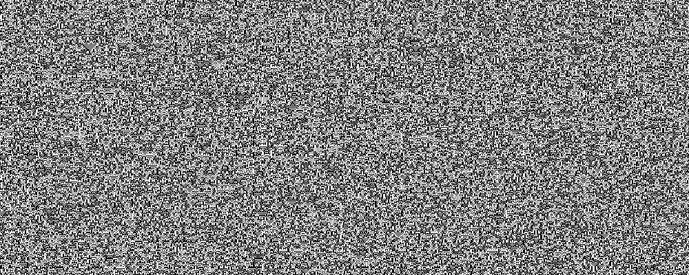
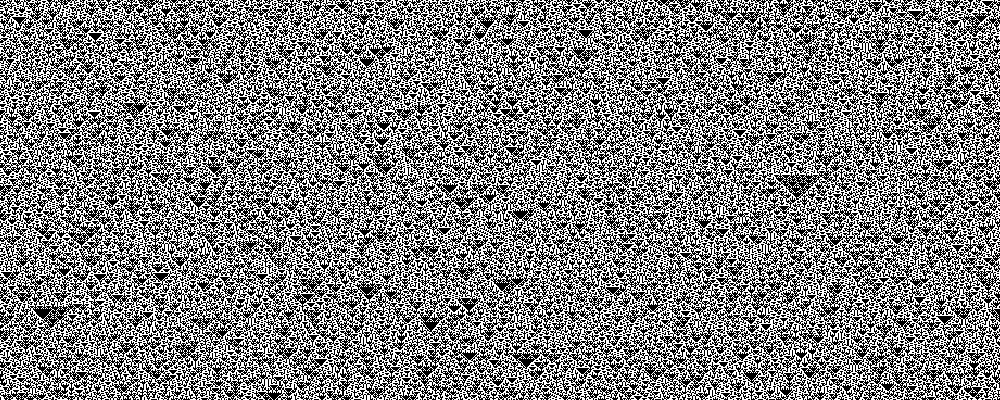
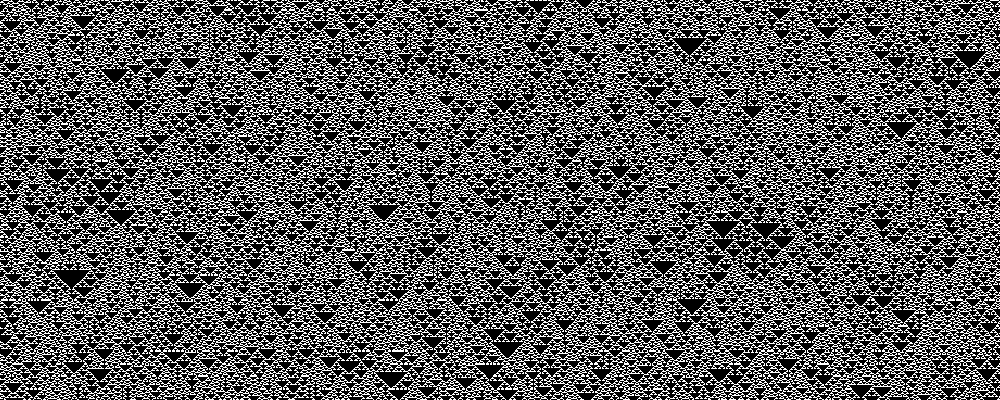
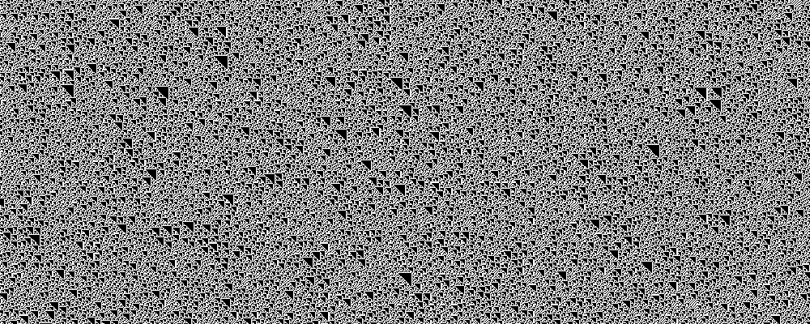
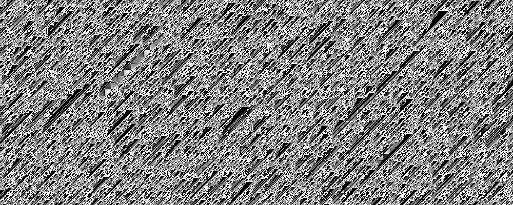
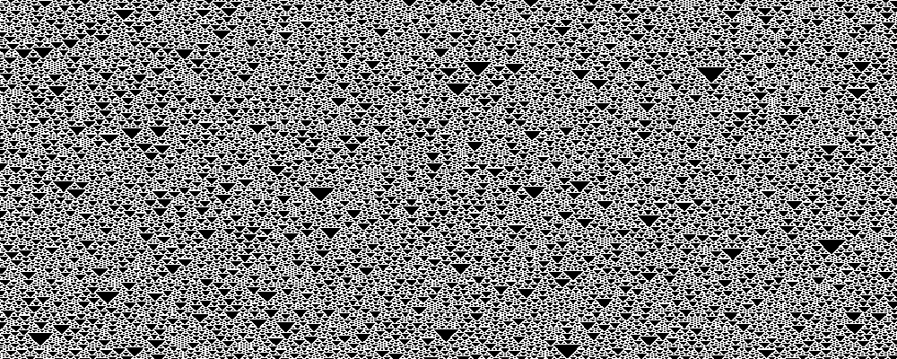
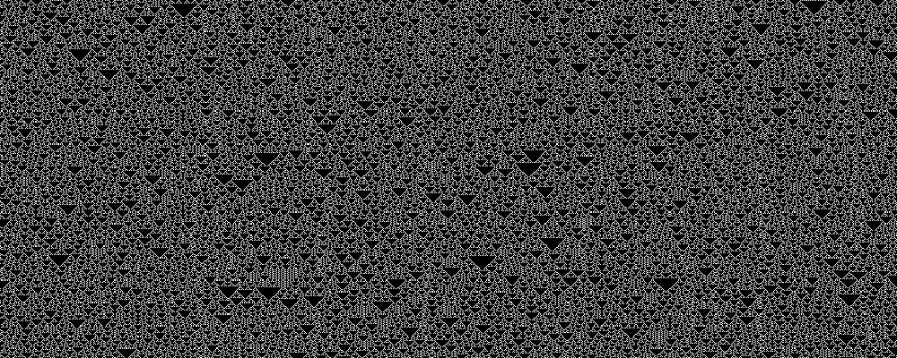
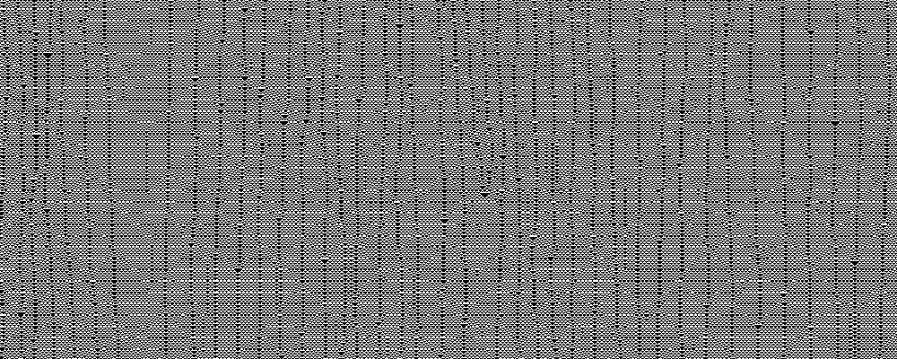

In this set of experiments, I explore cellular automata, treated as dynamical systems. The state of the system is a pair of real numbers, with the cells of the cellular automata state corresponding to binary digits of the real numbers. With this mapping, I calculate the largest Lyapunov exponent for each of the 256 elementary cellular automata. This analysis hints that so-called complex, class 4 cellular automata may be distinguished from chaotic, class 3 cellular automata by the largest Lyapunov exponent of the chaotic orbits.
A cellular automata is a simple pattern for updating an infinite string of “cells” in all places at once. In this set of experiments, I consider “elementary” cellular automata which act on a string of white and black cells. I also call a white cell a one and a black cell a zero.
The system starts at some initial state and then this state is updated each step by the cellular automaton's rule. In deciding what color a cell will become, the elementary cellular automata in this set of experiments use the color of three cells: the cell's current color, the color of the immediate left neighbor, and of the right neighbor.
Since the elementary cellular automata consider three cells per update, and a cell is one of two possible colors, there are 23 = 8 possible neighborhoods to consider. To have a well defined rule, the result for each of these neighborhoods must be defined. Will it become white or black, one or zero?
Because the result for each of these 8 possible neigborhoods can be one of two colors, there are 28 = 256 possible “rules.” In this set of experiments, I calculate 1,000+ steps for each of the 256 rules.
These 256 rules have a natural naming scheme. There is a natural ordering for the 8 neigborhoods that define a rule. Consider each neighborhood a three-bit binary number, ranging from 0 to 7.

Note that for each neighborhood, a well defined rule will output a 0 or a 1. Ordering the output for the 8 different neighborhoods generates an eight-bit binary number, ranging from 0 to 255 (Wolfram 53). For example, rule 1 would generate a 1 for the neighborhood 000, but it generates 0 for all other neighborhoods.
Since my computer has only finite memory, I cannot simulate a cellular automaton on an infinite number of bits. Instead, I use a finite state space. This means, I need to decide what to do for the boundary conditions. Since it seems to simulate an infinite space the best, I choose to wrap the state space around. The left-most cell is an immediate neighbor to the right-most cell.
To apply the methods of analysis from Chaos and Dynamical Systems, I map the state space of the cellular automata to a two-dimensional real map on [0, 1]. I am choosing to ignore the fact that some real numbers have multiple binary representations (e.g. 1/2 = .1000... or .0111...). The reason the map is two-dimensional rather than one dimensional is this: imagine an infinite string of ones and zeros running in both directions. Since a the binary representation of a real number extends infinitely in only one direction (that of the fractional part), the most natural thing to do is to represent this infinite string by two real numbers.

Other representations are certainly possible. To represent a cellular automaton state as a single real number, one could pick an arbitrary location to represent the 1/2-place and then spiral outward. This feels unnatural, since neighboring digits in the cellular automata state space are not immediate neighbors in the real number's representation.
With this mapping from cellular automaton state to a pair of real numbers, (x, y), a cellular automaton computation generates a list of 2D points. This infinite, ordered list is called an orbit in a dynamical system.
There is a way of quanifying if an orbit is chaotic or not. Lyapunov exponents say how quickly orbits very close to each other spread apart. If the Lyapunov exponent is >0, it means nearby orbits spread apart exponentially. The orbit is then called chaotic (Alligood, Definition 5.2, p.196). To numerically find the largest Lyapunov exponent of the orbit, I use Wolf's algorithm (Pilant Lecture 12A ; Sprott).
For each of the 256 elementary cellular automata rules, I calculated an orbit of length five hundred, two thousand, and five thousand. Rather than show the results of these 768 calculations, I will show examples of 15 of the more interesting cases.
In the 500-length case, I used as state space of 1,000 bits. I then chose an
initial condition
randomly with states of equal probability for 41 bits about its center
octave:1> s = zeros(1000, 1);
octave:2> s(480:520) = rand(41, 1) > 0.5;
I do a similar thing in the 5,000-length orbits. With a state space of
10,000 bits, I choose 101 bits at random with equal probability in the center.
EDU>> s = zeros(10000, 1);
EDU>> s(4950:5050) = rand(101,1) > 0.5;
In the 2,000-length case I do something different. With a state space of 2000 bits I choose all 2000 bits randomly with equal probability. This is much closer to simulating an irrational value, especially since I chose to use circular boundary conditions. This will make a difference, as some cellular automata seem to have chaotic orbits only in this case, with an approximately irrational number.
To reduce the filesizes transferred, I only show a short subset in the middle of each cellular automaton's “history” diagram.
Rule 150, 100101102, is interesting because in the 2,000-length orbit case, it has a high Lyapunov exponent. In the orbit length cases, rather than chaotic orbits, it showed very regular behavior. I believe this is due to the difference in initial condition choice. With rational initial conditions, it seems to show aysmptotically periodic orbits, but with irrational initial conditions it shows chaotic orbits.
The calculated Lyapunov exponent was 1.45. Compare the history and orbit of the 2,000-length case.
Compare to the 5,000-length case.

Once interpreted as two real numbers, it looks like the 5,000-length orbit is asymptotically periodic.
Like Rule 150, Rule 105 only showed chaotic orbits in the 2,000-length orbit case. Likely, this is for the same reason, the 2,000-length orbit more closely simulated an irrational initial condition.
The calculated Lyapunov exponent was 1.44
Rule 90 and Rule 165 are equivalent (Atlas of Simple Programs). Replace all black cells with white cells and vice versa to switch from rule to the other.
Like the previous two rules, these rules showed chaotic behavior only in the 2,000-length case, with a simulated irrational number. For both rules, I calculated a largest Lyapunov exponent as 1.39.
Rule 22 and Rule 151 are also equivalent by swapping black and white (zero and one). Unlike the previous sets of rules, I calculated chaotic orbits in all three experiments.
In the 2,000-length Rule 22 orbit, the largest Lyapunov exponent is 1.33, but in the 2,000-length Rule 151 orbit, the Lyapunov exponent is 1.57. Although these rules are equivalent, the fact that white and black are swapped effectively means the initial conditions were different. This means that the Lyapunov exponent must be very variable for the chaotic attractor (or there are more than one attractor).
This is output from rule 22.
Rules 45, 75, 89, and 101 are equivalent. In the 2,000-length case I calculated Lyapunov exponents of 1.22, 1.23, 1.19, and 1.38, respectively.

Rules 60, 102, 153, and 195 are equivalent. In the 2,000-length case I calculated Lyapunov exponents of 1.17, 1.09, 1.09, and 1.17, respectively.
Rules 106, 120, 169, and 225 are equivalent. In the 2,000-length case I calculated Lyapunov exponents of 0.90, 1.03, 1.04, and 1.01, respectively.
Rules 30, 86, 135, and 149 are equivalent. In the 2,000-length case I calculated Lyapunov exponents of 1.05, 1.07, 0.92, and 0.88, respectively.

Rules 126 and 129 are equivalent. In the 2,000-length case I calculated Lyapunov exponents of 0.85 for both.
Rules 146 and 182 are equivalent. In the 2,000-length case I calculated Lyapunov exponents of 0.74 and 0.73, respectively.
Rules 18 and 183 are equivalent. In the 2,000-length case I calculated Lyapunov exponents of 0.73 and 0.70, respectively.

Rules 122 and 161 are equivalent. In the 2,000-length case I calculated Lyapunov exponents of 0.70 and 0.95, respectively.

Rules 54 and 147 are equivalent. In the 2,000-length case I calculated Lyapunov exponents of 0.49 and 0.47, respectively.
Rules 110, 124, 137 and 193 are equivalent. In the 2,000-length case I calculated Lyapunov exponents of 0.13, 0.12, 0.02, and 0.27, respectively.

While quantitatively the least chaotic, rule 110 shows interesting “particle” interactions. It is for this reason that it is classified as a “complex,” class IV rule. (Kunkle 11)
allcellularautomata.m is the “main loop” function. It takes an initial state, a number of generations to calculate, and an array of all rules to use in the calculations. When run in “headless” mode, it creates PDF files of the history, orbits, and Lyapunov exponent graphs, as well as text files with more detailed information.
function [history, fhistory] = allcellularautomata(initialstate, generations, initialrule, isheadless)
N = length(initialstate);
state = zeros(N, 1);
nextstate = zeros(N, 1);
history = zeros(generations, N);
fhistory = zeros(generations, 2);
for rulenumber = initialrule
if isheadless == 0
f = figure();
else
f = figure('visible','off');
end
state(:) = initialstate(:);
history(1,:) = state;
for g=2:generations
for i=1:N
% wrap around
lefti = i-1;
if lefti < 1
lefti = N;
end
% wrap around
righti = i+1;
if righti > N
righti = 1;
end
nextstate(i) = n3rule([state(lefti) state(i) state(righti)], rulenumber);
end
state(:) = nextstate(:);
history(g,:) = state(:);
end
% Display a conventional cellular automata map,
% showing state as pixels in an image. This is like the examples here:
% http://mathworld.wolfram.com/CellularAutomaton.html
% and perhaps more appropriately,
% with examples of rules for neighborhood 3, here:
% http://mathworld.wolfram.com/ElementaryCellularAutomaton.html
imshow(history);
%colormap(hot(256))
title(strcat('History plot for Elementary Rule ', int2str(rulenumber)));
% To interpret the finite array of states in a way that would make sense
% for an infinite string of bits, we interpret the state as two floating
% point nubmers.
%
% More accurately, we treat the state as two strings of binary digits
% (bits), representing two real numbers in [0, 1]. They start in the middle
% of the array, and one has bits going right and the other has bits going
% left.
%
% The alternative, treating it as only one floating point number suffers
% from strange effects because of boundary conditions. That is, the
% least-significant bits of the floating point representation affect the
% most-significant bits. This is not an effect that would happen in the
% infinite case.
fhistory(:) = horzcat( ...
sum( ...
history(:,ceil(N/2):N) .* (2 .^ (-1 .* (1+repmat(ceil(N/2):N,generations,1)-ceil(N/2)))), ...
2), ...
sum( ...
history(:,ceil(N/2)-1:-1:1) .* (2 .^ (-1 .* repmat(1:ceil(N/2)-1,generations,1))), ...
2));
if isheadless == 0
disp('Initial state:')
fhistory(1,:)
disp('Ending state:')
fhistory(generations,:)
disp('press any key to continue');
% wait for user input
pause;
else
print(f, '-r300', '-dpdf', strcat('rule', int2str(rulenumber), '-history.pdf'));
end
plot(fhistory(:,1),fhistory(:,2));
title(strcat('Orbit plot for Elementary Rule ', int2str(rulenumber)));
if isheadless ~= 0
print(f, '-r300', '-dpdf', strcat('rule', int2str(rulenumber), '-orbit.pdf'));
end
datapath = strcat('rule', int2str(rulenumber), '.dat');
save(datapath, '-ascii', 'fhistory');
multilyapunov(datapath, rulenumber);
end % done with rules loop
end
n3rule.m is the function which does the caluclations for each rule. It works by looking at the bits for each neighborhood in the rule number and multiplexing the output based on the state of the length-3 array/neighborhood given as input.
function out = n3rule(M, n)
% Given a rule set, n, as a unsigned 8-bit integer (uint8),
% does the state M produce a live or dead cell?
% M is a size-3 array representing a small neighborhood.
% Convert the neighborhood into a bitmask representing the rule
% number.
bitindex = M .* [4, 2, 1];
bitindex = sum(bitindex);
bitmask = uint8(2^bitindex);
out = bitand(bitmask, n) ~= 0;
multilyapunov.m calculates the largest Lyapunov exponent for a 2D orbit.
function multilyapunov(filename, isheadless)
% Calculates the largest Lyapunov exponent of a dataset.
% Uses the method described here:
% http://sprott.physics.wisc.edu/chaos/lyapexp.htm
% We use norm(), rather than abs(). This amounts to taking the
% Euclidean distance between vectors.
% load in data file
data = load(filename);
% calculate number of data points
[N,M] = size(data);
N2 = floor(N/2);
N4 = floor(N/4);
% find mid point of orbit sequence
k=N2;
% create space for exponents
exponent = zeros(N4,1);
dprev = zeros(M,1)';
myeps = eps('single');
% look at 1/4 of the points
for (j=1:N4)
% set distance initially
d = norm(data(k+1,:)-data(k,:));
index = k+1;
for (i=2:N-1)
% see if there is a closer point
% We must be careful in this step to ensure that
% we renormalize along the line between the two previous
% points. That way we are getting the largest Lyapunov exponent.
dcurr = data(i,:)-data(k,:);
if (i ~= k) && (norm(dcurr))<d && ismultiple(dprev, dcurr) == 1
d = norm(dcurr);
index = i;
end
end
% write log of quotient as difference of logs to get better accuracy!
if norm(data(k,:)-data(index,:)) > myeps && norm(data(k+1,:)-data(index+1,:)) > myeps
exponent(j) = log( norm(data(k+1,:)-data(index+1,:)))-log(norm(data(k,:)-data(index,:)));
end
% repeat with the next point
k = k+1;
end
% now plot the lyapunov exponents
t = 1:N4;
lyapunov = exponent(1:N4);
exp_avg = 0.0;
% find the average value for lyapunov exponent
for (i=1:N4)
exp_avg = exp_avg + exponent(i);
end
% plot the exponents, the average, and the baseline
if isheadless == 0
f = figure();
else
f = figure('visible','off');
end
exp_avg = exp_avg/N4;
plot(t,lyapunov,t,0,t,exp_avg);
if isheadless ~= 0
pathprefix = strcat('rule', int2str(isheadless), '-lyapunov');
print(f, '-r300', '-dpdf', strcat(pathprefix, '.pdf'));
fid = fopen(strcat(pathprefix, '.txt'), 'w');
else
fid = 0;
end
fprintf(fid, 'average value for lyapunov exponent is: %f\n', exp_avg);
fclose(fid);
ismultiple.m is a helper function for calculating the largest Lyapunov exponent for a 2D orbit. It is used to determine points which are okay to use for renormalization.
function [output] = ismultiple(scaledv, rootv)
% Returns 1 if scaledv = lambda * rootv for some scalar lambda.
% Otherwise 0
% Define some value of 'close'.
% Here we use the machine epsilon for the single precision value of 1.
% Even though the default is double precision, this will make it more
% likely for us to find better Lyapunov exponents in the multi-dimensional
% case.
myeps = eps('single');
output = 0;
% Two vectors are linearly dependent when the determinant of this matrix
% is zero. See:
% http://www.math.oregonstate.edu/home/programs/undergrad/CalculusQuestStudyGuides/vcalc/lindep/lindep.html
% http://en.wikipedia.org/wiki/Linear_independence#Alternative_method_using_determinants
D = horzcat(scaledv', rootv');
if det(D) <= myeps
output = 1;
end
| Rule | Notes | 2,000-length Lyapunov exp. |
500-length | 5,000-length |
|---|---|---|---|---|
| 73 | W+ | 0 | 0 | 0 |
| 109 | W+ | 0 | 0 | 0 |
| 137 | ^ | 0.021314 | 0.164427 | 0 |
| 124 | ^ | 0.119714 | 0.058037 | 0 |
| 110 | ^ | 0.125197 | 0.005764 | 0 |
| 193 | ^ | 0.273403 | 0.191303 | 0 |
| 147 | ^ | 0.469898 | 0.592045 | 0 |
| 54 | ^ | 0.492321 | 0.014497 | 0 |
| 122 | + | 0.698529 | 0.145074 | 0 |
| 161 | + | 0.949707 | 0 | 0 |
| 183 | + | 0.699048 | 0.089066 | 0 |
| 18 | + | 0.729279 | 0.456123 | 0 |
| 182 | + | 0.731118 | 0.078797 | 0 |
| 146 | + | 0.740505 | 0.093224 | 0 |
| 126 | + | 0.846913 | 0.080218 | 0 |
| 129 | + | 0.846914 | 0.080263 | 0 |
| 149 | W+ | 0.884794 | 0.080263 | 0.973602 |
| 135 | W+ | 0.917641 | 0.843196 | 0.973499 |
| 30 | W+ | 1.045584 | 0.769440 | 0.986373 |
| 86 | W+ | 1.065465 | 0.821074 | 0.928197 |
| 106 | + | 0.897803 | 0 | 0 |
| 225 | + | 1.007624 | 0 | 0 |
| 120 | + | 1.033221 | 0 | 0 |
| 169 | + | 1.037291 | 0 | 0 |
| 102 | + | 1.088862 | ||
| 153 | + | 1.088862 | 0 | 0 |
| 60 | + | 1.170586 | 0 | 0 |
| 195 | + | 1.170586 | 0 | 0 |
| 89 | W+ | 1.192999 | 1.285273 | 1.299358 |
| 45 | W+ | 1.217507 | 1.249671 | 1.271245 |
| 75 | W+ | 1.230172 | 1.088283 | 1.324628 |
| 101 | W+ | 1.378533 | 1.141068 | 1.395981 |
| 22 | + | 1.327705 | 1.385613 | 1.458550 |
| 151 | + | 1.571052 | 1.384629 | 1.449308 |
| 90 | + | 1.390813 | 0 | 0 |
| 165 | + | 1.390813 | 0 | 0 |
| 105 | + | 1.443450 | 0 | 0 |
| 150 | + | 1.446001 | 0 | 0 |
[+] Labeled Chaotic in Kunkle's classification thesis. [^] Labeled Complex in Kunkle's classification thesis. [W] Complexity from simple initial conditions (Wolfram p.58).
For the curious, I am providing the initial states I used for these experiments. Most pictures shown here were generated by running 2,000 steps with this initial state. I found this approximated an irrational initial state, whereas the initial states I used for the 500-length orbits and the 5,000-length orbits are more like rational initial states.